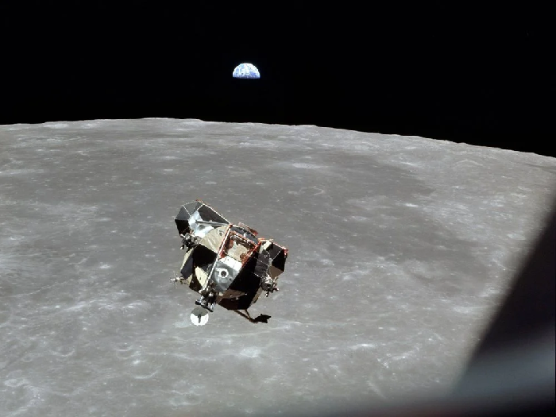
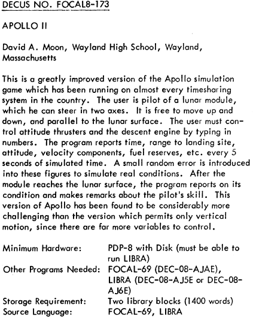
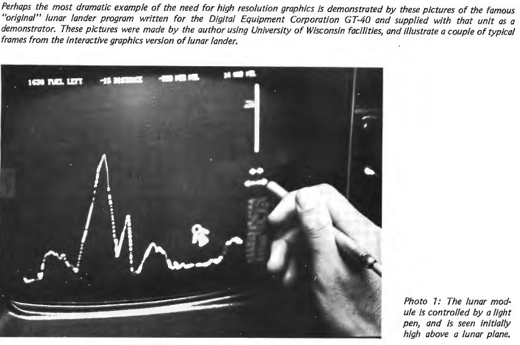
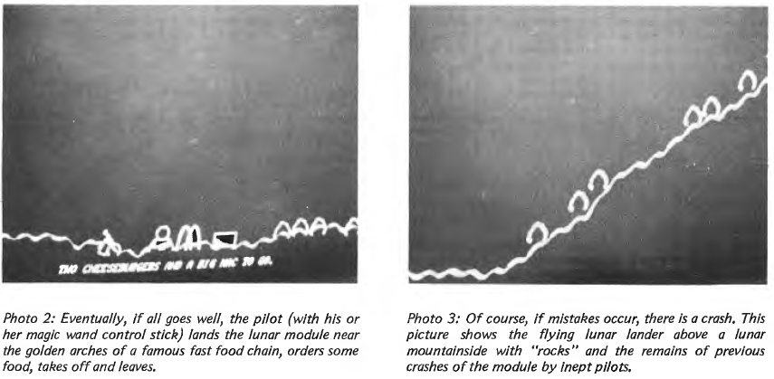

ROCKET and Lunar Landers
The Context
On 20 July 1969 at 20:17:40 UTC, an amazing event played out before an estimated television audience of about 650 million people. After having traveled 240,000 miles in seventy-six hours and after a two and a half hour descent, the lunar module named Eagle touched down on the southwestern edge of the moon's Sea of Tranquility.
Needless to say, quite a defining moment in the history of human progress.

Before we get into the game I'm going to be talking about, let's take a little side trip into another game that had a big impact.
A Space War Set the Stage
During the early 1960s, NASA was working with the Massachusetts Institute of Technology's Instrumentation Lab to develop the guidance and control systems for the Apollo spacecraft. At that same campus a programmer named Steve Russell was working with a small team to create one of the first true video game experiences.
Inspired by the space race, but well before the moon landing, the game that Russell wrote was called Spacewar!. Russell wrote the game using the same DEC PDP-1 model of computer that generated spacecraft telemetry data for NASA's Mariner program, which had started in 1962. At its core, Spacewar! was a relatively simple combat game where two players controlled spaceships. These spaceships had limited fuel and were in combat around the gravitational influence of a star situated at the center of the battlefield.
Spacewar! was only playable in university research labs but it was extremely influential on an industry that had not yet really come to grips with the idea of a game culture and certainly not a commercial game culture. Spacewar! is what inspired Atari founder Nolan Bushnell to create Computer Space, which was probably the first coin-operated arcade game. This eventually led to the immensely successful Asteroids.
The commonality of these games for the purposes of this article was the simulation, to varying degrees, of gravity, thrust and inertia. The reason that's relevant is a lot of early work in what we'll come to see as the "homebrew culture" was the conflation of simulations and games.
This article is not about any of the games just mentioned, however. Instead I wanted to start with the above just to show what was in the air given one of the most pivotal moments of human history. A bit more prosaically, the 1969 moon landing also directly inspired a genre of games later known as lunar lander simulations. Much like in Spacewar!, players had to deal with the Newtonian physics that applied against the limitations of the technology of a spacecraft. The lunar lander simulations were not about combat or destroying spacecraft-endangering asteroids. Rather the goal was simply landing safely on the surface of the moon.
Project LOCAL
One of the earliest high school computing consortiums was called Project LOCAL, where "LOCAL" apparently referred to Laboratory Program for Computer-Assisted Learning.
The project grew out of a pilot project by two Massachusetts towns, Lexington and Westwood, that were awarded a grant under the Elementary and Secondary Education Act (ESEA). This grant involved leasing teletypes hooked up to the BBN Time-Sharing System. This was a time-sharing service run by Bolt Beranek and Newman (BBN), which was a research and development company for computer technologies.
Not relevant to this immediate history but of interest: BBN is where Will Crowther was working when he came up with his famous game eventually known as Colossal Cave Adventure in the mid 1970s.
In 1967, a further grant allowed Lexington, Westwood, and the additional towns of Natick, Needham, and Wellesley to establish Project LOCAL under the supervision of Robert Haven. The aim of the project was to explore the use of computers in math education and in helping students to develop problem-solving skills.
The relevance here is that Project LOCAL was the home of one of the most significant computer games created in the 1960s, eventually called "Lunar Lander" in later incarnations but starting with the simpler name of just "ROCKET."
For some historical context, you might be curious to check out a representative output of Project LOCAL by looking at a Local Link newsletter from April 1970. There was also a writeup of Project LOCAL in the November 1973 issue of the People's Computer Company newsletter.
Among the millions who watched the Apollo 11 landing was a seventeen year old Massachusetts high school student named Jim Storer. In the fall of 1969, around the time of the Apollo 12 launch, Storer took his excitement to class with him at Lexington high school. It was there that he programmed a simple text-based simulation of NASA's real-life technological achievement of landing on a non-terrestrial surface. Storer did this on his school's Digital Equipment Corporation PDP-8 minicomputer system.
Lexington High School had a PDP-8. It had eight teletypes, a small hard drive, and twelve kilobytes of main memory, where eight kilobytes was used by the system and four kilobytes time shared by the users. Jim Storer
Storer's game actually printed no title as part of its display, but the filename, which fit nicely into the operating system's six-character limit, was ROCKET. The program ran to only thirty-nine lines of code in FOCAL, which was the language the program was written in.
FOCAL was a programming language for the DEC PDP-8 first released in 1968. DEC refers to Digital Equipment Corporation who I will likely revisit more in future posts. For now I'll just note that a 1968 manual for the language states that FOCAL was Formulating Online Calculations in Algebraic Language. However, by at least 1978, and possibly as early as 1974, DEC was referring to the language as FOrmula CALulator. However it was phrased, the FOCAL language had been designed to make programming easier for students. That said, at the time in question, it was rapidly losing ground against the similar BASIC language.
You might want to check out the 1968 FOCAL Programming Manual. It certainly shows an interesting alternative that was competing with BASIC at the time for hearts and minds. The programming language BASIC, much like the company DEC, is something I will likely be coming back to in subsequent posts.
ROCKET Implementation
You can check out a transcription of the FOCAL source for ROCKET. Sometimes it's nice to see artifacts directly from the past and here you can see an image of the actual source code of the program printed out:
Looking at the code, you can see it's broken out into what look like various paragraphs. Each of those "paragraphs" — a line break between sections of code — was how FOCAL indicated the idea of distinct routines. Let's consider a few aspects of the code.
01.20 T "FIRST RADAR CHECK COMING UP"!!!;E
This line is using the T statement which does what it looks like: print out something to a display, like a teletype. The E there means "ERASE" and that's resetting all variable values. Then some variables are specifically set:
01.50 S A=120;S V=1;S M=32500;S N=16500;S G=.001;S Z=1.8
Here the S, which is short for "SET", tells FOCAL to store a symbol and the value assigned to that symbol. Here M is the starting mass of the rocket with full fuel and N is the mass of the rocket when fuel is empty.
Storer's simulation was overall pretty simple and yet it had enough of those variables that allowed for a relatively robust simulation. As part of that small code there was a realistic set of equations. You can see this in the last routine section.
09.10 S Q=S*K/M;S J=V+G*S+Z*(-Q-Q^2/2-Q^3/3-Q^4/4-Q^5/5)
09.40 S I=A-G*S*S/2-V*S+Z*S*(Q/2+Q^2/6+Q^3/12+Q^4/20+Q^5/30)
That code is effectively updating the velocity and position of the rocket. In reflecting on this bit of the code, Storer has said that his father may have taught him those equations. Needless to say, the computing power available for such a simulation was limited — much as it was for NASA in its more realistic endeavors.
The computer we had at our school was a huge cabinet but all it had was 12kb of memory and 8kb of that was the operating system. So you had 4kb and that was shared between eight users. It was hard because you had to keep track of every line of code. If there had been one more line in my program, the computer couldn't have run it. Jim Storer
The gameplay essentially consisted of a turn-based question and answer session. The player would be asked for the rocket fuel burn rate at each turn. This line of code handled that:
02.20 T %6.02," ",3600*V," ",%6.01,M-N," K=";A K;S T=10
That A near the end was short for "ASK" and that asked the player for input. In this case, the input was the desired burn rate and that would be stored in K. The player would then enter some number between 0 to 200.
What I wrote was a question and answer game — at each stage of the landing you'd find out your current velocity and then you had to enter in how much fuel to use. If you burned fuel too early, you stopped too high and end up crashing to the ground — it's a delicate balance to make a graceful landing without hitting the moon too hard. Jim Storer
From the code perspective, the third routine group would handle the fuel consumption aspects.
03.40 I ((N+S*K)-M)3.5,3.5;S S=(M-N)/K
That bit of code, for example, was checking if the amount of fuel that was burned during this turn — represented by S*K — would reduce the mass of the rocket (effectively S*K-M) beyond the empty weight of the rocket (N).
For each turn, the player receives rows of data, one at a time, representing the elapsed time, altitude, velocity, and fuel remaining in the rocket's tank. Each turn, the player contributes a single number to the rightmost column and that number represents the amount of fuel to burn in the next ten-second interval.
Looking at the code, you can see there were various outcomes:
05.40 I (1-W)5.5,5.5:T "PERFECT LANDING !-(LUCKY)"!;G 5.9
05.50 I (10-W)5.6,5.6;T "GOOD LANDING-(COULD BE BETTER)"!;G 5.9
05.60 I (22-W)5.7,5.7;T "CONGRATULATIONS ON A POOR LANDING"!;G 5.9
05.70 I (40-W)5.81,5.81;T "CRAFT DAMAGE. GOOD LUCK"!;G 5.9
05.81 I (60-W)5.82,5.82;T "CRASH LANDING-YOU'VE 5 HRS OXYGEN"!;G 5.9
The challenge of the game is that you have to slow your rocket enough to land well enough — ideally without taking any damage — before running out of fuel. If you're too cautious in your approach, the moon's gravity slowly increases your downward velocity beyond the ability of your engines to counteract it. If you're too aggressive in your approach, however, you can run out of fuel too early which leads you to free fall down and crash hard.
Here's an example of what success looked like in the game:
And here's what failure looked like:
You can try a version of ROCKET in your browser, if you're so inclined.
This playable version was originally written by Stefan Trenkel and is made available under GNU AGPL version 3. It's worth noting that this implementation does seem to match the original implementation quite well. It is possible to get the same success and fail situations, under the same approximate conditions, with this updated version as it is in the original.
ROCKET Narrative
Storer's ROCKET game is clearly a mathematical simulation. That said, in relatively few lines of code you have a pretty sophisticated simulation. Granted, though, it's a simulation of what, at heart, is pretty simple in nature: acceleration, momentum and force. While many people, perhaps sadly, don't necessarily look back too fondly on their physics courses, it's indisputable that the mechanics of nature are pretty simple when you break down the math of what is happening with objects and the forces acting on them.
What's interesting here, of course, is that this mathematical simulation is couched in a narrative. Consider how the game opens up from the initial line of code:
01.04 T "CONTROL CALLING LUNAR MODULE. MANUAL CONTROL IS NECESSARY"!
Thus is the simulation framed in a narrative. Granted, it's a bare bones narrative but, given the recency of the moon landing at the time, it's certainly a narrative that players of the time would have had no trouble fleshing out in their minds.
Thus ROCKET does stand as a very early example of ludonarrative: a ludic experience that provides a narrative experience to collaborate with and contextualize the game mechanics.
ROCKET Evolution
You can see a mention of the program in the Lexington High School "System Symptoms" from 13 January 1970:
Storer submitted his game to PDP-8 maker DEC, which was always looking for innovative and interesting uses of its computers. We have the letter, from 20 February 1970, that Storer got based on his submission to DECUS:
That indicates a date of February of 1970 but there is a printing of the program in as DECUS FOCAL8-81. Notice that here the game is referred to as "APOLLO" in the text. What was DECUS? This was the Digital Equipment Computer Users' Society. This group was formed to support organizations that owned a DEC computer by publishing a monthly newsletter called DECUSCOPE. That newsletter featured program libraries for DEC computers.
In fact, bringing us back to where we started, a paper called "SPACEWAR! Real-Time Capability of the PDP-1" was presented in May 1962, which was the inaugural meeting of DECUS. The programs submitted in this way were usually distributed for free or used as demonstrations to potential clients, serving as a useful marketing tool. Here we see an early example of games, at least in form of simulations, being used to showcase what a system was capable of.
Storer's game did go on to give rise to many variants. It wasn't much later (February of 1972) that we see the following notice in DECUS:
At DEC, an employee named David H. Ahl translated Storer's ROCKET / APOLLO into the BASIC language, which soon overtook FOCAL as the most popular introduction to programming for students as well as the general public. From a 1972 edition of DEC's BASIC Application Programs – Science you can see two entries. One of these is called LUNAR and the other, apparently directly derived from ROCKET, is called LUNAR2.
From there, both the FOCAL and BASIC versions of Storer's simulation spread to other PDP-8 users through DEC's EDU newsletter and through distribution by DEC's Education Product Group.
In a similar venue, DEC came up with a GT40 Graphic Display Terminal based on a PDP-11, which was first introduced in 1972. One of the most famous pieces software for the GT40 was a MOONLANDER game written by Jack Burness. This game was also known as LUNAR LANDER. Some feel that this was the inspiration for Atari's coin-operated video game of that name. We have an assembly version of the source code that's dated 25 February 1973.
In terms of GT40 game itself, the November 1976 issue of BYTE Magazine had an interesting write up on this in an article by Ira Jay Rampil called "Some Graphics Background Information."
The above is a picture from the article showing how the lunar module in this verison of the game could be controlled by a light pen.
The above picture, also from the article, shows success and failure. In a later interview on the game, the creator makes an interesting statement.
You can go through the mountains on the left side if you have enough speed. And be inside the mountain. This is [a] bug, because you can be travelling so fast that the collision detection routine does not detect to collision because you've already gone through the wall. No impact. Jack Burness
In July 1973, DEC published a book edited by David Ahl called 101 BASIC Computer Games that included both Storer's version of ROCKET and two others that had been inspired by Storer's program. You can check out these ROCKET implementations.
Eventually hobby programmers of the early software revolution began coding their own versions of the ROCKET or Lunar Lander game for home computers of the time: the TRS-80, Apple II, Commodore PET / VIC-20, Atari 400/800, and others. One version of this was published in 1978 in the book BASIC Computer Games Microcomputer Edition.
Ludonarrative Started Early!
As indicated above, ROCKET is a very example of ludonarrative. Likely a large part of this was due to the fact that it was rooted in a simulation that had to do with a real-life event that just about everyone was aware of. Thus it's very likely the case that the simulational aspects were entirely superseded by the fact that this was a gaming experience.
I started here with a game that started life in 1969 and saw refinement within the early part of the 1970s. It was the case that this period of time ended up being a particularly fertile time for experimentation and innovation around simulations and games. Future posts will showcase some of the other efforts that took place in this same time period.